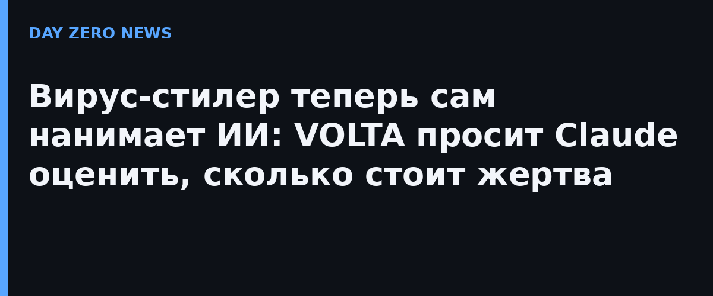

Исследователь Cisco Talos Райан Феттерман 31 октября опубликовал разбор нового самостирающегося Windows-стилера VOLTA-AUTODOXER, найденного через исследовательскую программу CAIRN для отслеживания вредоносов с ИИ-интеграцией. Обычный стилер крадёт пароли из браузеров, cookie, платёжные карты, сид-фразы криптокошельков, сессии Discord, Telegram, Steam и Roblox, токены Microsoft OAuth, SSH- и облачные ключи — и на этом обычно заканчивает. VOLTA идёт дальше: она собирает из этого структурированный «пакет улик» — геолокацию и домашний адрес, работодателя, год рождения по документам, последние четыре цифры карт, рабочие Slack-пространства, оценку инвентаря Roblox по живому курсу — и отдаёт его языковой модели.
Пакет уходит на эндпоинт OpenRouter с системным промптом «форензик-аналитик, составляющий оценку цели». От модели требуют раздел «WHAT THEY'RE WORTH» — ценности жертвы, ранжированные по низкому/среднему/высокому уровню монетизации, — и раздел «THEIR OPSEC» с оценкой её цифровой гигиены. Температуру злоумышленник выставил жёстко детерминированную — 0.2, чтобы выводы были стабильными. Модель по умолчанию — anthropic/claude-opus-4.6; если она отказывается (вредонос подмечает фразы вроде «I can't»), запускается цепочка запасных аэродромов: moonshotai/kimi-k2, затем google/gemini-2.5-flash. По мнению Talos, сама цепочка отказов доказывает: автор заранее рассчитывал наткнуться на защитные фильтры моделей.
Перед обращением к ИИ VOLTA делает «обогащающий» проход уже похищенными сессиями: ищет в почте жертвы чеки Amazon, Walmart, PayPal и по ним подтверждает домашний адрес, вытаскивает историю заказов Uber Eats и DoorDash, дополняет профиль Discord по украденному токену. Любопытная деталь от Talos: весь ИИ-анализ происходит с сети и машины самой жертвы — запрос к модели уходит с её же IP, и только потом результат (файл AI_Analysis.txt) вместе с досье упаковывается в архив и утекает. Инфраструктуры, принадлежащей атакующему, в этой схеме почти нет — стилер к тому же самостирающийся.
Talos полагает, что VOLTA — товарный продукт: вместо зашитых настроек в ней шесть сменных слотов (канал приёма, ключи и т.п.), которые заполняются при сборке под конкретного заказчика — то есть автор продаёт сборку кастомных сборок. Ключ шифрования этих слотов — по сути SHA-256 двух констант из того же файла, так что это скорее имитация заботы о клиенте. Главный вывод исследователей даже не в конкретном вредоносе, а в смене парадигмы: «закинь широкая сеть, укради всё, а разберётся ИИ» — модель впервые работает не помощником малвари, а аналитиком-триажником на стороне оператора.
Рецепт скучен, но именно он ломает такую схему: не пользоваться одним паролем на почте, играх и крипте; включить 2FA на почте (именно почтовые сессии дают VOLTA почти всю «живую» докрутку); для криптокошельков — отдельные устройства или хотя бы отдельный профиль браузера; раз в полгода выходить из всех сессий в Google/Microsoft/Discord и менять пароли; не хранить сид-фразы в файлах на рабочем Windows. Если антивирус ругается на «подозрительный PowerShell» или исчезают файлы отчётов — это повод не радоваться, а сменить пароли с чистого устройства.